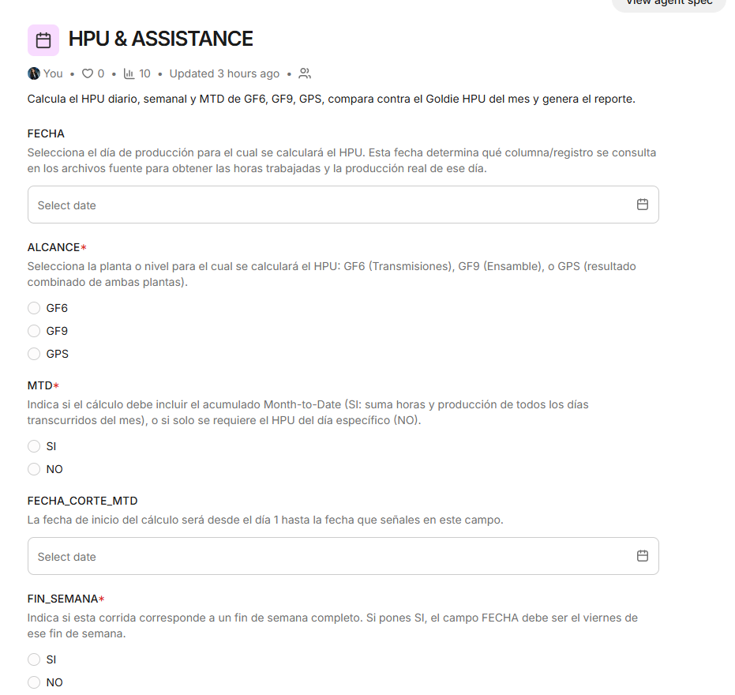

Descripción
¿Qué hace el agente?
Calcula el HPU diario, semanal y MTD de GF6, GF9 y GPS, lo compara contra el Goldie HPU del mes y genera el reporte.
- Cálculo de HPU por planta, GPS y taller.
- Alcance seleccionable: GF6 (Transmisiones), GF9 (Ensamble) o GPS (resultado combinado).
- Opción de acumulado Month-to-Date con fecha de corte y cálculo de fin de semana completo.
- Comparación contra el Goldie HPU del mes y generación automática del reporte.
- Avance del 60%: en desarrollo, pendiente cargar el último archivo e iniciar pruebas.
Vistas del agente
Galería
